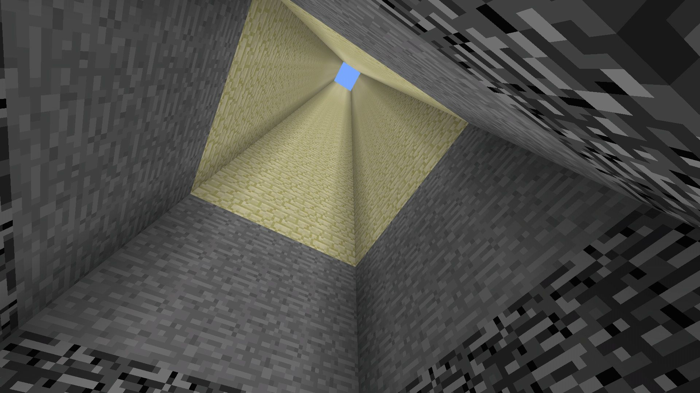
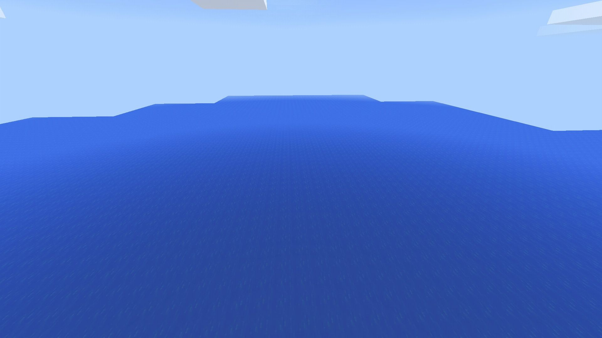

MCPEのスーパーフラットのレイヤーを変更できるようになるMODです。
1.スーパーフラットのレイヤーを変更できるようになリます。
2.*を使用してBlockID:○○を○個などできます。
3.アプリにエディタが内蔵されています。
アプリのエディタ画面
プリセット "Redstone Ready" で生成したときのレイヤー
プリセット "Water World" で生成したときのレイヤー
Minecraft PocketEdition : 1.1.2.50
BlockLauncher : v1.16
ModdedPE : v2.0
アップデートされても使用できる場合や使用できなくなる場合があります。
BlockLauncher用とModdedPE用でダウンロードするファイルが別なので、自分の使用するランチャー用のMOD(apk)をダウンロードしてください。
更新時パッケージ破損と出る場合は一度SuperFlatLayerChangerをアンインストールしてください。
いつか更新する…
MCPE 1.1.2.50に対応
ModdedPE 2.0に対応
エディタ画面を追加
ワールド生成時にレイヤーを読み込むように変更
アプリアイコンを変更
*を使用するとレイヤーが正常に変更できないのを修正
1.0.9.1に対応
ModdedPEに対応
初リリース